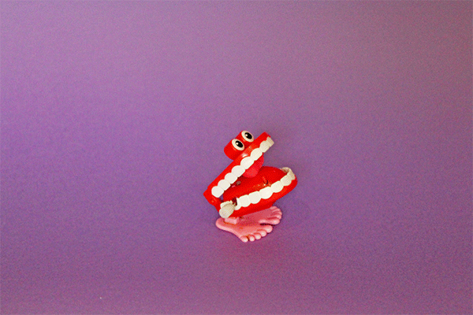
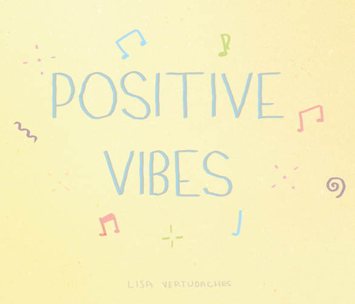

1. Which disorder suits being aware of your surrounding, and counting to ten?
Question 1: The correct answer is the Anxiety..
People with anxiety issues need a semblance of stability in their lives and the simple act of counting to ten can immitate that.
2. What is good for mental health?
Question 2: The correct answer is the Sleep.
When you sleep your body is restoring itself, therefore giving you the feeling of rehabilitation.
3. Whose fault is it when your loved ones struggles with mental issues?
Question 3: The correct answer is the No one's .
You cannot carry the blame for having a mental illness the same way a physically ill person cannot.
4. What activities can support depression?
Question 4: The correct answer is the Go find something you are passionate about.
Where you find passion you find happiness, so even if you don't instantly feel better you should stick with it.
5. When suffering from PTSD, which of the following should you do?
Question 5: The correct answer is the Talk through your experience, and seek help from others .
Talking can be very theraputic, whether it be with your therapist, family, friends, or even your pet.